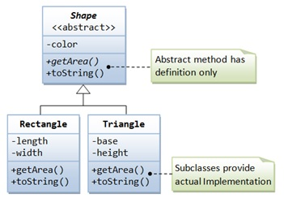

Q. : Explain the concept of abstraction and encapsulation with suitable example.
ANS
Abstraction "Abstraction refers to the act of representing essential features without including background details or explanations." The main idea behind data abstraction is to give a clear separation between properties of data type and the associated impiementation details. This separation is achieved in order that the properties of the abstract data type are visible to the user interface and the implementation details are hidden. Thus, abstraction forms the basic platform for the creation of user-defined data types called objects. Data abstraction is the process of refining data to its essential form. In object-oriented programming language C++, it is possible to create and provide an interface that accesses only certain elements of data types. The programmer can decide which user to give org rant access to and hide the other details. This concept is called data a hiding which is similar in concept to data abstraction. Example : When designing a class student in C++, we need the data elements such as rotno, student_ name, marks, grade, etc. If we now design a class representing a cricket player we need details like player_name, no_of centuries, striking ,rate, no_ofs matches played, etc. It will not make sense to add the player's marks, grades which are applicable to a student class to this player class.

Encapsulation Encapsulation is the process of combining or packaging data with functions and thereby The concept of abstraction brings forth another related term known as encapsulation. "The wrapping up of data and functions that act upon that data in a single unit is termed as encapsulation". It binds together both the data and code and thus keeps both safe from the outside world. The data and the code to manipulate the data are combined in such a way that a black box is created which is self contained and modular. This box is termed as a class in object oriented terminology. Within a class the code or the data can be private or public. If it is private then these cannot be accessed by the outside world whereas public means that the code and the data is accessible to everyone. Typically the data is private and the methods are an interface to the private elements of the object. Thus, encapsulation allows users to create a new data type. This new data type is termed abstract data type. Though the new data type is similar to that of built-in data type, it is termed abstract data type because it enables users to abstract a concept from the problem space into the solution space. Apart from the above, all the features that hold for built-in types also hold solution space. Apart from the above, all the features that hold for built-in types also hold for abstract data types. Data encapsulation led to the important concept of data hiding. Data hiding is the implementation details of a led to the important concept of data hiding. Data hiding is the implementation details of a Class that are hidden from the user. Class that are hidden from the user.
public class Employee {
private BigDecimal salary = new BigDecimal(50000.00);
public BigDecimal getSalary() {
return salary;
}
public static void main() {
Employee e = new Employee();
BigDecimal sal = e.getSalary();
}
}